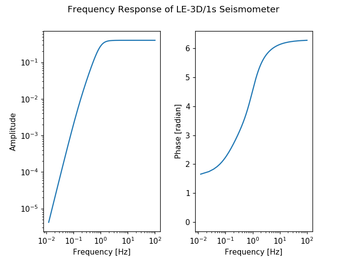

13. Poles and Zeros, Frequency Response¶
Note
For metadata read using
read_inventory() into
Inventory objects
(and the corresponding sub-objects Network,
Station,
Channel,
Response), there is a convenience method
to show Bode plots, see e.g.
Inventory.plot_response()
or Response.plot()).
The following lines show how to calculate and visualize the frequency response of a LE-3D/1s seismometer with sampling interval 0.005s and 16384 points of fft. Two things have to be taken into account for the phase (actually for the imaginary part of the response):
- the fft that is used is defined as exp(-i*phi), but this minus sign is missing for the visualization, so we have to add it again
- we want the phase to go from 0 to 2*pi, instead of the output from atan2 that goes from -pi to pi
import numpy as np
import matplotlib.pyplot as plt
from obspy.signal.invsim import paz_to_freq_resp
poles = [-4.440 + 4.440j, -4.440 - 4.440j, -1.083 + 0.0j]
zeros = [0.0 + 0.0j, 0.0 + 0.0j, 0.0 + 0.0j]
scale_fac = 0.4
h, f = paz_to_freq_resp(poles, zeros, scale_fac, 0.005, 16384, freq=True)
plt.figure()
plt.subplot(121)
plt.loglog(f, abs(h))
plt.xlabel('Frequency [Hz]')
plt.ylabel('Amplitude')
plt.subplot(122)
# take negative of imaginary part
phase = np.unwrap(np.arctan2(-h.imag, h.real))
plt.semilogx(f, phase)
plt.xlabel('Frequency [Hz]')
plt.ylabel('Phase [radian]')
# title, centered above both subplots
plt.suptitle('Frequency Response of LE-3D/1s Seismometer')
# make more room in between subplots for the ylabel of right plot
plt.subplots_adjust(wspace=0.3)
plt.show()
(Source code, png, hires.png)
{kind=link}
{kind=link}
